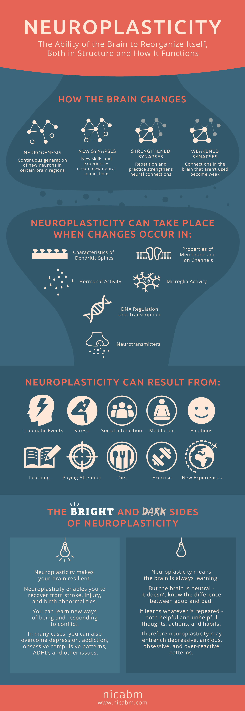

Neuroplasticity is the ability that our brain has to physically react to the actions and experiences that we have throughout our life. When we perform a skill or action, a neural pathway forms or strengthens. Its through this process that we get better at things with repetition and deliberate learning.
Understanding this concept can have a huge impact on your learning. Knowing how skills and knowledge are actually imprinted into your brain through repitition allows you to take advantage of this and learn much more effectively
Neuroplasticity can be increased in a number of ways. Every experience and interaction that you have throughout your day has a physical effect on your brain. Whether it is significant, minor, good or bad, everything has an effect!
Below is a great infographic I found going over the topic:
The Growth mindset is all about understanding that our brains are malleble objects that can change and grow throughout our lives. You wont be good at something the first time you try, skills are learned by understanding that through repitition and deliberate learning, you can get better at something. The opposite of the growth mindset is the Fixed mindset which is the belief that skills and knowledge are fixed and cannot be worked on and improved. The fixed mindset can be incredibly limiting as it can cause you to not even try at something just because you aren't good at it initially. This is obviously not ideal as almost no one is good at something the first time they do it!
I have always been huge on the Growth mindset and am constantly putting in effort to ensure I am not putting up walls between myself and new experiences. Taking this growth mindset into my course at Dev Academy is going to be so important in order to ensure I get the most out of the course. The courseload is heavy and will likely feel overwhelming at some points but it is important that I stick to it and understand that what I am doing is meant to be hard and I wont learn it overnight
Below is a video outlining the difference between growth and fixed mindset